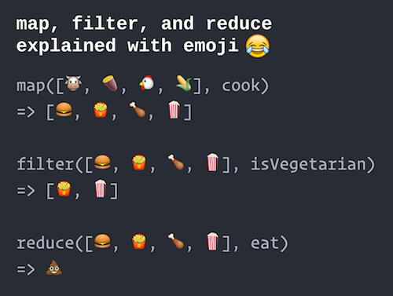

Chapter 12 Programmazione funzionale in JS
Nonostante il nome, il linguaggio JavaScript e’ basato piu’ su Scheme che su Java. Scheme e’ un functional programming language, il che significa che segue un paradigma centrato sulle functions piuttosto che su variables, objects e statements come hai fatto finora (conosciuto come imperative programming). Alternativa all’object-oriented programming, il functional programming fornisce un framework per pensare a come dare istruzioni a un computer. Anche se JavaScript non e’ un linguaggio completamente funzionale, supporta diverse feature di functional programming che sono vitali per sviluppare sistemi efficaci e interattivi. Questo capitolo introduce questi concetti funzionali.
12.1 Functions ARE Variables
Di solito consideri le functions come “sequenze di istruzioni con un nome”, o gruppi di righe di codice a cui viene dato un nome. Ma in un paradigma di functional programming, le functions sono first-class citizens—cioe’ sono “things” (values) che possono essere organizzate e manipolate proprio come le variables.
In JavaScript, functions ARE variables:
//crea una function chiamata `sayHello`
function sayHello(name) {
console.log("Ciao, "+name);
}
//che tipo di cosa e' `sayHello` ?
console.log(typeof sayHello); //=> 'function'Proprio come let x = 3 definisce una variable per un value di tipo number, o let msg = "ciao" definisce una variable per un value di tipo string, la function sayHello sopra e’ in realta’ una variable per un value di tipo function!
Importante: ci riferiamo a una function usando il suo nome senza parentesi!
Il fatto che le functions siano variables e’ la realizzazione fondamentale quando programmi in stile funzionale. Devi saper pensare alle functions come a things (nouns), piuttosto che come a behaviors (verbi). Se immagini le functions come “ricette”, allora devi pensarle come pagine di un ricettario (che possono essere rilegate insieme o passate a un amico), invece che come la sola sequenza di azioni da eseguire.
E dato che le functions sono solo un altro tipo di variable, possono essere usate ovunque una variable “normale” possa essere usata. Per esempio, le functions sono values, quindi possono essere assegnate ad altre variables!
//crea una function chiamata `sayHello`
function sayHello(name) {
console.log("Ciao, "+name);
}
//assegna il value `sayHello` a una nuova variable `greet`
let greet = sayHello;
//chiama la function assegnata alla variable `greet`
greet("mondo"); //stampa "Ciao mondo"- E’ utile pensare alle functions come a un tipo speciale di array. Proprio come gli arrays hanno una sintassi speciale
[](bracket notation) per “ottenere” un value dalla lista, le functions hanno una sintassi speciale()(parentheses) che si usa per “eseguire” la function.
Anonymous Functions
Le functions sono values, proprio come arrays e objects. E proprio come arrays e objects possono essere scritti come literal che possono essere passati anonimamente dentro functions, JavaScript supporta le anonymous functions:
var array = [1,2,3]; //variable con nome (non anonima)
console.log(array); //passa una var con nome
console.log( [4,5,6] ); //passa un value anonimo//function con nome (normale)
function sayHello(person){
console.log("Ciao, "+person);
}
//una function anonima (senza nome!)
//(Non possiamo referenziarla senza un nome, quindi scrivere una function anonima
//non e' uno statement valido)
function(person) {
console.log("Ciao, "+person);
}
//function anonima (value) assegnata a una variable
//equivalente alla versione nell'esempio precedente
let sayHello = function(person) {
console.log("Ciao, "+person);
}- Puoi pensare a questa struttura come equivalente a dichiarare e assegnare un array
let myVar = [1,2,3]… solo che in questo caso, invece di prendere l’array anonimo (lato destro) e dargli un nome, stiamo prendendo una anonymous function e dandole un nome!
Quindi puoi definire functions con un nome in due modi: o creando una function con nome esplicito o assegnando una anonymous function a una variable:
//queste producono la stessa function
function foo(bar) {}
let foo = function(bar) {}L’unica differenza tra queste due costruzioni e’ l’ordering. Quando l’interpreter JavaScript legge e fa il parsing del file di script, mettera’ le dichiarazioni di variable e function in memoria prima di eseguire qualsiasi riga. In pratica, JavaScript sembrera’ “spostare” le dichiarazioni di variable e function in cima al file! Questo processo si chiama hoisting (le dichiarazioni vengono “hoisted” in cima allo script). L’hoisting funziona solo per le dichiarazioni di functions con nome: assegnare una anonymous function a una variable non fa hoist della definizione della function:
In pratica, dovresti sempre dichiarare e definire le functions prima di usarle (mettile tutte in cima al file!), cosi’ riduci l’impatto dell’hoisting e puoi usare entrambe le costruzioni.
12.2 Object Functions
Inoltre, le functions sono values, quindi possono essere assegnate come values di object properties (dato che le object properties sono come variables con namespace):
//un object che rappresenta un cane
let dog = {
name: 'Sparky'
breed: 'mutt'
}
//assegna una function anonima alla property `bark`
dog.bark = function(){
console.log('bau!');
}
//chiama la function
dog.bark(); //stampa "bau!"- Ancora una volta, e’ come assegnare un array come property di un object. Con un value array useresti la bracket notation per usare il suo “special power”; con un function value usi le parentheses!
Questo e’ il modo in cui possiamo creare un equivalente delle “member functions” (o methods) per i singoli objects: l’object dog ora ha una function bark()!
- Come in Java, puoi riferirti all’object su cui una function e’ chiamata usando la keyword
this. Nota che il modo in cui la variablethisviene assegnata puo’ portare a errori sottili quando usi callback functions (vedi sotto). Per maggiori dettagli, vedi il capitolo sulle feature ES6. Come breve esempio:
// An object representing a Dog
let fido = {
name: "Fido",
bark: function() { console.log(this.name, "abbaia")}
}
// Un object che rappresenta un altro Dog
let spot = {
name: "Spot",
bark: function() { console.log(this.name, "guaisce")}
}
console.log('***Questo e' Fido che abbaia:***');
fido.bark(); //=> "Fido abbaia". Nota: `this` si riferira' all'object `fido`.
console.log('***Questo e' Spot che abbaia***');
spot.bark(); //=> "Spot guaisce". Nota: `this` si riferira' all'object `spot`.12.3 Callback Functions
Infine, le functions sono values, quindi possono essere passate come parameters ad altre functions!
//crea una function `sayHello`
function sayHello(name){
console.log("Ciao, "+name);
}
//una function che prende UN'ALTRA FUNCTION come argomento
//questa function chiamera' la function argomento, passandole "mondo"
function doWithWorld(funcToCall){
//chiama la function data con un argomento "mondo"
funcToCall("mondo");
}
doWithWorld(sayHello); //stampa "Ciao mondo";In questo caso, la function doWithWorld eseguira’ qualsiasi function le venga passata, passando il value "mondo".
Nota importante: quando passiamo
sayHellocome argomento, non mettiamo parentesi dopo il nome! Mettere le parentesi dopo il nome della function esegue la function, causando l’esecuzione delle righe di codice che definisce. Questo fa si’ che l’espressione che contiene la function risolva al suo valore di return, invece che al value della function stessa. E’ come passare la torta gia’ fatta invece della pagina con la ricetta.function greet() { //versione senza argomenti per chiarezza return "Ciao"; } //logga il value della function stessa console.log(greet); //stampa ad es. [Function: greet], la function console.log(greet()); //stampa "Ciao", che e' cio' a cui `sayHello()` risolve
Una function passata in un’altra e’ comunemente chiamata callback function: e’ un argomento a cui l’altra function “richiama” ed esegue quando necessario.
function doLater(callback) {
console.log("Sto aspettando un po'...");
console.log("Ok, e' ora di lavorare!");
callback(); //"call back" ed esegue quella function
}
function doHomework() {
// ...
};
doLater(doHomework);Le functions possono prendere piu’ di una callback function come argomento, e questo puo’ essere un modo utile di composing behaviors.
function doTogether(firstCallback, secondCallback){
firstCallback(); //esegui la prima function
secondCallback(); //esegui la seconda function
console.log('allo stesso tempo!');
}
function patHead() {
console.log('batti la testa');
}
function rubBelly() {
console.log('strofina la pancia');
}
//passa le callbacks per farle insieme
doTogether(patHead, rubBelly);Questa idea di passare functions come argomenti ad altre functions e’ al cuore del functional programming, ed e’ cio’ che gli da potere espressivo: possiamo definire il behavior del programma principalmente in termini dei behavior eseguiti, e meno in termini delle data variables usate. Inoltre, le callback functions sono fondamentali per supportare l’interactivity: molte functions built-in di JavaScript accettano una callback function che specifica cosa deve accadere in un momento specifico (ad es. quando l’utente clicca un button).
Spesso una callback function viene definita solo per essere passata a un’altra function. Questo rende il nome della callback un po’ ridondante, quindi e’ piu’ comune usare anonymous callback functions:
//dai un nome alla function anonima assegnandola a una variable
let sayHello = function(name){
console.log("Ciao, "+name);
}
function doWithWorld(funcToCall){
funcToCall("mondo");
}
//passa la function con nome usando il nome
doWithWorld(sayHello);
//passa la versione anonima della function
doWithWorld(function(name){
console.log("Ciao, "+name);
});In un certo senso, abbiamo solo “copiato e incollato” il value anonimo (che in questo caso e’ una function) dentro la chiamata
doWithWorld()—proprio come faresti con qualsiasi altro tipo di variable anonima.Guarda bene la posizione della parentesi graffa di chiusura
}e della parentesi)nell’ultima riga. La graffa chiude la definizione del value della anonymous function (il primo e unico parametro didoWithWorld), e la parentesi chiude la lista dei parametri della functiondoWithWorld. Devi includere entrambe per avere una sintassi valida!- E dato che le anonymous functions possono essere definite dentro altre anonymous functions, non e’ raro avere molte righe
})nel codice.
- E dato che le anonymous functions possono essere definite dentro altre anonymous functions, non e’ raro avere molte righe
Closures
Le functions sono values, quindi non solo possono essere passate come parameters ad altre functions, ma possono anche essere restituite come risultati di altre functions!
//Questa function produce UN'ALTRA FUNCTION
//che saluta una persona con un greeting dato
function makeGreeterFunc(greeting){
//salva esplicitamente il parametro come variable locale (per chiarezza)
let localGreeting = greeting;
//Una nuova function che usa il parametro `greeting`
//questo e' solo un value!
let aGreeterFunc = function(name){
console.log(localGreeting+" "+name);
}
return aGreeterFunc; //return del value (che in questo caso e' una function)
}
//Usa il "maker" per creare due nuove functions
let sayHello = makeGreeterFunc('Ciao'); //dice "Ciao" a un nome
let sayHowdy = makeGreeterFunc('Salve'); //dice "Salve" a un nome
//chiama le functions create
sayHello('mondo'); //"Ciao mondo"
sayHello('Dave'); //"Ciao Dave"
sayHowdy('mondo'); //"Salve mondo"
sayHowdy('partner'); //"Salve partner"In questo esempio, abbiamo definito una function
makeGreeterFuncche prende in input alcune informazioni (un greeting) come parametro. Usa quelle informazioni per creare una nuova functionaGreeterFunc—questa function avra’ un behavior diverso a seconda del parametro (ad es. puo’ dire “Ciao” o “Salve” o qualsiasi altro greeting dato). Poi restituiamo questa nuovaaGreeterFuncin modo che possa essere usata in seguito (fuori dalla function “maker”).Quando chiamiamo
makeGreeterFunc(), il risultato (una function) viene assegnato a una variable (ad es.sayHello). E dato che il risultato e’ una function, possiamo chiamarla con un parametro! QuindimakeGreeterFuncagisce un po’ come una “factory” che crea altre functions, che poi possono essere usate dove servono.
La parte piu’ significativa di questo esempio e’ lo scoping della variable greeting (e del suo alias localGreeting). Normalmente, penseresti che localGreeting sia scoped a makeGreeterFunc—una volta terminata la function maker, la variable localGreeting dovrebbe andare persa. Tuttavia, la variable greeting era in scope quando aGreeterFunc e’ stata creata, e quindi rimane in scope (disponibile) per quella aGreeterFunc anche dopo che la function maker ha fatto return!
Questa struttura in cui una function “ricorda” il suo contesto (le variables in scope attorno a lei) si chiama closure. Anche se la variable localGreeting era scoped fuori da aGreeterFunc, e’ stata enclosed da quella function e quindi continua a essere disponibile in seguito. Le closures sono una delle tecniche piu’ potenti ma anche piu’ confuse in JavaScript, e sono un modo molto efficace per salvare data in variables (invece di dipendere da global variables o altri stili di programmazione scadenti). Saranno utili anche quando affronteremo problemi introdotti da Asynchronous Programming.
12.4 Functional Looping
Un altro modo in cui il functional programming (e in particolare le callback functions) viene usato e’ sostituire i loop con chiamate di function. Per diversi pattern di looping comuni, questo rende il codice piu’ espressivo—piu’ chiaro su cosa sta facendo e quindi piu’ facile da capire. Il functional looping e’ stato introdotto in ES5.
Per capire il functional looping, considera prima il classico for loop usato per iterare un array di objects:
let array = [{...}, {...}, {...}];
for(let i=0; i<array.length; i++){
let currentItem = array[i]; //variable di comodo per l'item corrente
//fai qualcosa con l'item corrente
console.log(currentItem);
}Anche se questo loop e’ familiare e veloce, richiede lavoro extra per gestire la loop control variable (i), che puo’ diventare particolarmente confusa quando hai loop annidati (e le data structure annidate sono molto comuni in JavaScript!).
Come alternativa, puoi usare il metodo forEach() del tipo Array:
let array = [{...}, {...}, {...}];
//function per cosa fare con ogni item
function printItem(currentItem){
console.log(currentItem;)
}
//stampa ogni item
array.forEach(printItem);Il metodo forEach() scorre ogni item nell’array ed esegue la callback function data, passando quell’item come parametro. In pratica, ti permette di specificare “cosa fare con ogni elemento” dell’array come function separata, e poi “applicare” quella function a ogni elemento.
forEach()e’ un metodo built-in per gli Arrays—simile apush()oindexOf(). Per riferimento, l’“implementazione” della functionforEach()somiglia a questa:Array.forEach = function(callback) { //define the Array's forEach method for(let i=0; i<this.length; i++) { callback(this[i], i, this); } }In pratica, il metodo fa il lavoro di gestire il loop e la loop control variable per te, permettendoti di concentrarti solo su cosa vuoi fare per ogni item.
La callback function passata a
forEach()viene eseguita con fino a tre argomenti (in ordine): (1) l’item corrente dell’array, (2) l’index dell’item nell’array, e (3) l’array stesso. Questo significa che la tua callback puo’ avere fino a tre argomenti, ma dato che in JavaScript tutti gli argomenti sono opzionali, puoi anche usarne meno—non serve includere un argomento per index o array se non li usi!
Anche se e’ possibile creare una callback function con nome per forEach(), e’ molto piu’ comune usare una anonymous callback function:
//print each item in the array
array.forEach(function(item){
console.log(item);
})Questo codice si puo’ quasi leggere come: “prendi l’
arraye per ogni elemento esegui lafunctionsu quell’item”.Questo e’ simile come uso al enhanced for loop in Java.
Map
JavaScript fornisce diversi altri functional loop methods. Per esempio, considera il seguente loop “regolare”:
function square(n) { //una function che eleva al quadrato un numero
return n*n;
}
let numbers = [1,2,3,4,5]; //un array iniziale
let squares = []; //l'array trasformato
for(let i=0; i<numbers.length; i++){
let transformed = square(numbers[i]); //chiama la function square()
squares.push(transformed); //aggiungi il trasformato alla lista
}
console.log(squares); // [1, 4, 9, 16, 25]Questo loop rappresenta un’operazione di mapping: prende un array originale (ad es. di numeri da 1 a 5) e produce un nuovo array con ciascun elemento trasformato in un certo modo (ad es. elevato al quadrato). Questa e’ un’operazione comune: magari vuoi “transformare” un array in modo che tutti i values siano arrotondati o in lowercase, o vuoi mappare un array di parole in un array con le loro lunghezze, o vuoi mappare un array di values in un array di stringhe HTML <li>. E’ possibile fare tutte queste modifiche usando il pattern di codice sopra: creare un nuovo array vuoto, poi iterare l’array originale e pushare i values trasformati in quel nuovo array.
Tuttavia, JavaScript fornisce anche un built-in array method chiamato map() che esegue direttamente questo tipo di mapping su un array senza bisogno di un loop:
function square(n) { //una function che eleva al quadrato un numero
return n*n;
}
let numbers = [1,2,3,4,5]; //un array iniziale
//mappa i numeri usando la function di trasformazione `square`
let squares = numbers.map(square);
console.log(squares); // [1, 4, 9, 16, 25]La function map() dell’array produce un nuovo array con ciascun elemento trasformato. La function map() prende come argomento una callback function che esegue la trasformazione. La callback dovrebbe prendere come argomento l’elemento da trasformare e restituire un value (l’elemento trasformato).
- Le callback functions per
map()ricevono gli stessi tre argomenti delle callback functions diforEach(): l’elemento, l’index e l’array.
E ancora, la callback function di map() (ad es. square() nell’esempio sopra) e’ piu’ comunemente scritta come anonymous callback function:
let numbers = [1,2,3,4,5]; //an initial array
let squares = numbers.map(function(item){
return item*item;
});Note: la differenza principale tra il metodo .forEach e il metodo .map e’ che .map restituisce ogni elemento. Se devi creare un nuovo array, usa .map. Se invece devi solo fare qualcosa per ogni elemento di un array, usa .forEach.
Filter
Una seconda operazione comune e’ filter una lista di elementi, rimuovendo quelli che non vogliamo (o piu’ precisamente: tenendo solo quelli che VOGLIAMO). Per esempio, considera il seguente loop:
function isEven(n) { //a function that determines if a number is even
let remainder = n % 2; //ottieni il resto quando dividi per 2 (operatore modulo)
return remainder == 0; //true if no remainder, false otherwise
}
let numbers = [2,7,1,8,3]; //an initial array
let evens = []; //the filtered array
for(let i=0; i<numbers.length; i++){
if(isEven(numbers[i])){
evens.push(numbers[i]);
}
}
console.log(evens); //[2, 8]Con questo loop di filtering, manteniamo i values per cui la function isEven() restituisce true (la function determina “cosa far entrare” e non “cosa far uscire”; una whitelist), e lo facciamo appendendo i values “buoni” a un nuovo array.
Come map(), gli arrays JavaScript includono un built-in method chiamato filter() che esegue direttamente questo filtering:
function isEven(n) { //a function that determines if a number is even
return (n % 2) == 0; //true if no remainder, false otherwise
}
let numbers = [2,7,1,8,3]; //an initial array
let evens = numbers.filter(isEven); //the filtered array
console.log(evens); //[2, 8]La function filter() dell’array produce un nuovo array che contiene solo gli elementi che corrispondono a un criterio specifico. La function filter() prende come argomento una callback function che decide questo. La callback prende gli stessi argomenti di forEach() e map(), e dovrebbe restituire true se l’elemento dato deve essere incluso nell’array filtrato (o false se non deve esserlo).
E ancora, di solito usiamo anonymous callback functions per
filter():let numbers = [2,7,1,8,3]; //an initial array let evens = numbers.filter(function(n) { return (n%2)==0; }); //one-liner!(Dato che JavaScript ignora il whitespace, possiamo compattare callback semplici su una sola riga. ES6 and Beyond descrive una sintassi ancora piu’ compatta per queste functions).
Poiche’ map() e filter() sono entrambi chiamati su arrays e producono arrays, e’ possibile chainarli tra loro, chiamando i metodi successivi su ogni value restituito:
let numbers = [1,2,3,4,5]; //an initial array
//ottieni i quadrati dei numeri PARI soltanto
let filtered = numbers.filter(isEven);
let squares = filtered.map(square);
console.log(squares); //[4, 16, 36]
//or in one statement, using results anonymously
let squares = numbers.filter(isEven)
.map(square);
console.log(squares); //[4, 16, 36]
Questa struttura puo’ rendere piu’ chiaro l’intento del codice rispetto a usare un set di loop o conditionals annidati: prendiamo numbers, poi filtriamo i pari e mappiamo ai quadrati!
Reduce
La terza operazione importante nel functional programming (oltre a mapping e filtering) e’ reduce un array. Ridurre un array significa aggregare i values dell’array insieme, trasformando gli elementi in un singolo value. Per esempio, sommare un array e’ un’operazione di reducing (ed e’ in effetti la piu’ comune!): riduce un array di numbers a un singolo valore di somma.
- Puoi pensare a
reduce()come a una generalization della functionsum()presente in molti altri linguaggi—ma invece di sommare (+) i values,reduce()ti permette di specificare quale operazione eseguire durante l’aggregazione (ad es. moltiplicazione).
Per capire come funziona un’operazione di reduce, considera il seguente loop di base:
function add(x, y) { //a function that adds two numbers
return x+y;
}
let numbers = [1,2,3,4,5]; //an initial array
let runningTotal = 0; //an accumulated aggregate
for(let i=0; i<numbers.length; i++){
runningTotal = add(runningTotal, numbers[i]);
}
console.log(runningTotal); //15Questo loop riduce l’array a una somma “accumulata” di tutti i numeri nella lista. Dentro il loop, la function add() viene chiamata e riceve il “current total” e il “new value” da combinare nell’aggregato (in quest’ordine). Il total risultante viene poi riassegnato come “current total” per l’iterazione successiva.
Il built-in array method reduce() fa esattamente questo lavoro: prende come argomento una callback function usata per combinare il running total corrente con il nuovo value e restituisce il total aggregato. Mentre le callback functions di map() e filter() di solito prendono 1 argomento (con altri 2 opzionali), la callback di reduce() richiede 2 argomenti (con altri 2 opzionali): il primo e’ il “running total” (chiamato accumulator), e il secondo e’ il “new value” da combinare nell’aggregato. (Anche se questo ordine non influenza l’esempio di somma, e’ rilevante per altre operazioni):
function add(x, y) { //a function that adds two numbers
return x+y;
}
let numbers = [1,2,3,4,5]; //an initial array
let sum = numbers.reduce(add);
console.log(sum); //15La function reduce() (non la callback, ma reduce() stessa) ha un secondo argomento opzionale dopo la callback che rappresenta il valore iniziale della riduzione. Per esempio, se volessimo iniziare la somma da 10 invece di 0, useremmo:
//sum starting from 10
let sum = numbers.reduce(add, 10);Nota che la sintassi puo’ essere un po’ difficile da parse se usi una anonymous callback function:
//sum starting from 10
numbers.reduce(function(x, y){
return x+y;
}, 10); //the starting value comes AFTER the callback!Il value dell’accumulator puo’ essere di qualsiasi tipo! Per esempio, puoi usare come starting value un object vuoto {} invece di un number, e far usare all’accumulator il value corrente per “aggiornare” quell’object (che sta “accumulando” informazioni).
Per riassumere, le operazioni map(), filter() e reduce() funzionano cosi’:

Nel loro insieme, le operazioni map, filter e reduce formano la piattaforma di base per una considerazione funzionale di un programma. In effetti, questi tipi di operazioni sono molto comuni quando si discutono data manipulations: per esempio, il famoso modello MapReduce prevede di “mappare” ogni elemento attraverso una function complessa (su un computer diverso, addirittura!), e poi “ridurre” i risultati in una singola risposta.
12.5 Pure Functions
Questa sezione e’ stata adattata da un tutorial di Dave Stearns.
Il concetto di first-class functions (functions come values) e’ centrale in ogni functional programming language. Tuttavia, il paradigma funzionale e’ piu’ di sole callback functions. In un linguaggio pienamente funzionale, costruisci programmi combinando piccole functions pure, riutilizzabili, che prendono in input data, li trasformano e poi li restituiscono per usi futuri. Le functions pure hanno le seguenti qualita’:
- Operano solo sui loro input e non fanno riferimento ad altri data (ad es. variables in scope piu’ alto come i globals)
- Non modificano mai i loro input—invece restituiscono sempre nuovi data o un riferimento a un input non modificato
- Non hanno side effects al di fuori dei loro output (ad es. non modificano variables a scope piu’ alto)
- A causa delle regole precedenti, restituiscono sempre gli stessi output per gli stessi input
Un programma funzionale manda il suo input state iniziale attraverso una serie di queste functions pure, proprio come un sistema idraulico manda l’acqua attraverso una serie di tubi, filtri, valvole, divisori, riscaldatori, raffreddatori e pompe. L’output della function “finale” in questa catena diventa l’output del programma.
Le functions pure sono quasi sempre piu’ facili da testare e da ragionare. Dato che non hanno side-effects, puoi semplicemente testare tutte le classi possibili di input e verificare che gli output siano corretti. Se tutte le tue functions pure sono ben testate, puoi combinarle per creare programmi altamente prevedibili e affidabili. I programmi funzionali possono anche essere piu’ facili da leggere e capire perche’ finiscono per apparire altamente declarative: si leggono come una serie di trasformazioni di data (ad es. prendi i data, poi filtrali, poi trasformali, poi ordina, poi stampa), con l’output di ogni function che diventa l’input della successiva.
Anche se alcuni zealot del functional programming direbbero che tutti i programmi dovrebbero essere scritti in stile funzionale, e’ meglio pensare al functional programming come a un altro tool nella tua cassetta degli attrezzi, adatto ad alcuni lavori e meno ad altri. L’object-oriented programming e’ spesso la scelta migliore per programmi client long-running e altamente interattivi, mentre il funzionale e’ piu’ adatto per programmi di breve durata o sistemi che gestiscono transazioni discrete (come molte web applications). E’ anche possibile combinare i due stili: per esempio, i componenti React possono essere object-oriented o functional, e spesso usi tecniche funzionali dentro componenti object-oriented.
- Infatti, le ultime versioni di Java—un linguaggio altamente object-oriented—aggiungono supporto per il functional programming!
Se ti interessa fare functional programming piu’ avanzato in JavaScript, ci sono molte librerie aggiuntive che possono aiutarti:
Esistono anche molti linguaggi progettati per essere funzionali fin dall’inizio, ma che possono essere compilati in JavaScript per funzionare nei web browser. Tra questi ci sono Clojure (via ClojureScript) ed Elm.
Risorse
- Functional Programming in JavaScript un tutorial interattivo fantastico per imparare il functional programming in JS
- Higher Order Functions un capitolo del libro online Eloquent JavaScript
- Scope & Closures un libro online con una spiegazione estremamente dettagliata dello scoping in JavaScript